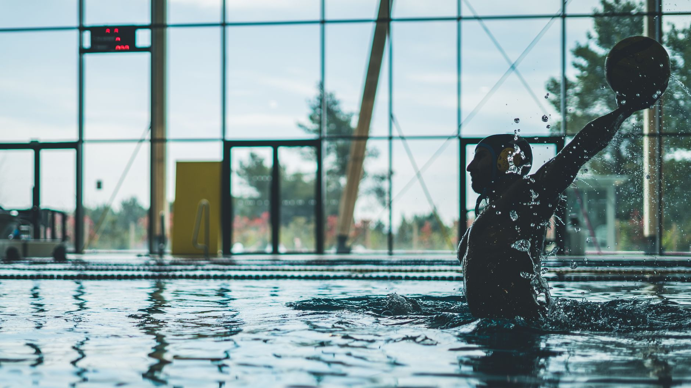

USA Water Polo Recognizes the Best Young Athletes in the Country
Each year, USA Water Polo identifies the most outstanding youth competitors through its Junior Olympics All-American program, and the recently announced 2026 honorees represent the very best that youth water polo has to offer. These young athletes have demonstrated not only exceptional skill in the water but also the discipline, coachability, and competitive drive that define champions at every level of the sport.
For parents and players in the Wesley Chapel, Land O' Lakes, and greater Tampa Bay area, this announcement is more than just a headline — it is a roadmap. It shows what is possible when young athletes commit to their development early and pursue their goals with intention.
What Does It Mean to Be a Junior Olympics All-American?
The Junior Olympics All-American designation is one of the most prestigious honors a youth water polo player can receive in the United States. It recognizes players who have performed at an elite level during the USA Water Polo Junior Olympics tournament, which brings together top club teams from across the nation.
Earning this recognition requires far more than raw athletic talent. Players must demonstrate:
- Technical proficiency in passing, shooting, and positioning
- Game intelligence — reading defenses, making smart decisions under pressure, and understanding team systems
- Physical conditioning that allows them to compete at a high intensity throughout an entire tournament
- Leadership and composure in high-stakes moments
These are qualities that are not developed overnight. They are built through consistent, high-quality training over many seasons.
The Path Starts Earlier Than Most Parents Realize
Many families are surprised to learn that the athletes earning All-American recognition at the Junior Olympics level often began their water polo journey at a very young age — sometimes as swimmers who transitioned into the sport or as young players introduced to the game through a local club program.
This is exactly why early exposure and quality coaching matter so much. Young athletes who develop strong swimming fundamentals alongside water polo skills give themselves a significant competitive advantage as they move up through age groups. The sport demands both endurance and technical swimming ability, which means that time spent in the pool — whether in swim training or water polo practice — is never wasted.
How Tampa Bay Families Can Start Building Toward Big Goals
For families in Wesley Chapel, Land O' Lakes, and the surrounding Tampa Bay communities, the path to competitive water polo is more accessible than ever. At Nexar Aquatic Academy, young athletes have access to structured aquatic training that builds the foundational skills needed to compete and grow in both swimming and water polo.
If your child is interested in pursuing water polo at a competitive level, here are practical steps to get started:
- Build a strong swimming base. Every elite water polo player is first a capable swimmer. Prioritize stroke technique, endurance, and comfort in the water.
- Start young and stay consistent. Early participation in organized aquatic programs creates long-term athletic habits that compound over time.
- Seek out experienced coaching. Skilled coaches can identify strengths, correct weaknesses early, and help players develop the game sense that separates good athletes from great ones.
- Compete regularly. Tournament experience teaches young athletes lessons that practice alone cannot replicate.
Inspiration Backed by Action
The 2026 Junior Olympics All-Americans are a source of genuine inspiration for every young water polo player dreaming of national recognition. At Nexar Aquatic Academy, we believe that athletes right here in the Tampa Bay area have the potential to reach those same heights — and we are committed to helping them build the foundation to get there.
Whether your child is just getting started in the water or is already competing at a club level, now is the perfect time to invest in their development. The All-Americans of tomorrow are training today.
Ready to get in the water?
First practice is completely FREE — no commitment needed.